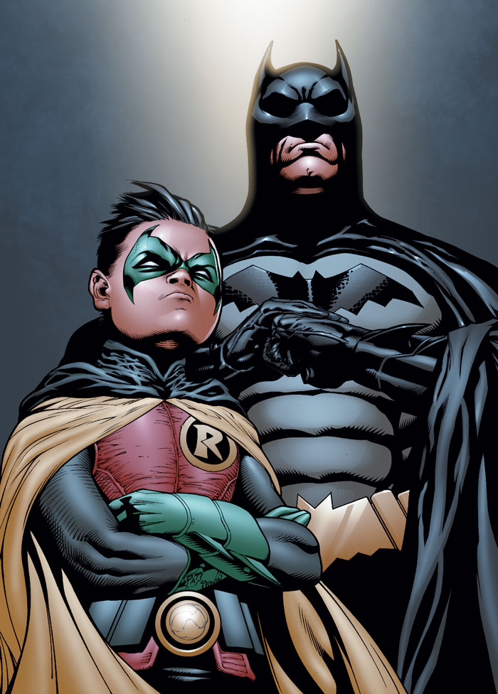

ROBIN.
Le partenaire
Le duo dynamique de Batman et Robin est une équipe de super-héros emblématique connue dans le monde entier - le stoïque Caped Crusader, qui recherche la justice, et son pupille de confiance. Ces deux héros ont pratiquement inventé la notion de compagnons pour enfants dans les bandes dessinées de super-héros. Une fois que Robin est entré en scène, toutes les autres super-personnes en avaient une toute petite version en train de suivre les missions. Shazam est allé jusqu'à avoir toute une famille avec lui. (Une telle démonstration.) Lorsque Bruce Wayne a trouvé Dick Grayson, il a trouvé un esprit semblable. Il était la merveille acrobatique orpheline des «Flying Graysons» qui ont été assassinés par le seigneur du crime Boss Zucco. Dick était un jeune homme touché par la tragédie et en proie à la vengeance. Bruce a accueilli le jeune garçon, se voyant beaucoup dans le Grayson nouvellement orphelin. Il a formé le jeune homme au combat et à la furtivité et a fait de Grayson son protégé, et avec cela, le manteau de Robin est né.
Plus de quatre-vingts ans de Batman lutte contre tous les crimes, de nombreux jeunes hommes et femmes ont pris les collants rouges et verts de Robin. Ils se sont battus côte à côte avec Batman, apprenant et grandissant sous la tutelle du plus grand détective du monde. Cependant, à un moment donné, chaque oiseau doit quitter le nid. Considérez-le comme un enfant vivant dans l'ombre de ses parents. L'enfant veut prouver qu'il est prêt à vivre seul, alors il s'aventure dans le monde pour devenir sa propre personne. C’est ça, mais avec des capes et des batarangs. Si Batman est bon dans une chose (et il est bon dans beaucoup de choses), il élève des justiciers. C'est un rite de passage quand un Robin devient plus qu'un simple compagnon. Il marque leur indépendance et aide à définir le héros ou le méchant qu'ils deviendront finalement. Entre Dick Grayson, Jason Todd et Tim Drake, chaque Boy Wonder a eu des vies post-Robin radicalement différentes. Le fil conducteur unique est l'influence laissée sur eux par leur mentor, Batman (et les uns des autres).